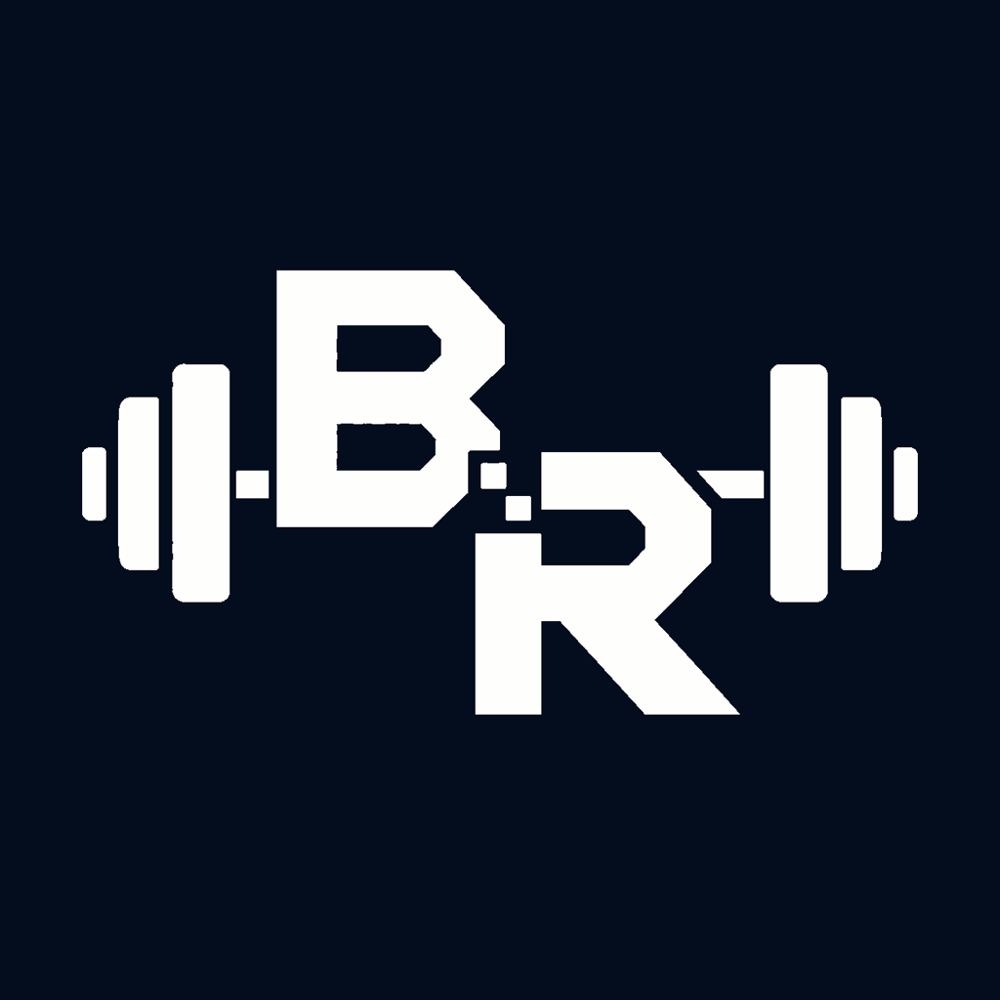

BitRep Get the betaLast session's numbers are already in the field. One tap logs the set and you're back at the bar.
And a pixel companion grows on the back of the work you actually did. Nothing here is bought.

Free forever for logging.Weight and reps arrive pre-filled from last time. The rest timer starts itself and keeps running when you leave the screen.
Pick a line at the start — speed, power or technique. Five stages, with a full-screen transformation when one lands.
No invented total-strength score. Every figure comes from sets you logged, over 8 weeks, 6 months or a year.
Answer a few questions and BitRep suggests a split from a library of real ones — full body, upper/lower, PPL, PHUL. Then schedule it, follow an order, or pick each time.
Plateau advice arrives only when the numbers support it.
Rest runs on the Lock Screen and in the Dynamic Island, so the phone can stay in your pocket between sets.
Logging, unlimited exercises and your whole history cost nothing — no session cap, no ads. Pro adds depth for people who want it.
The beta is open. Bring your history or start from nothing — your first session takes under a minute to set up.